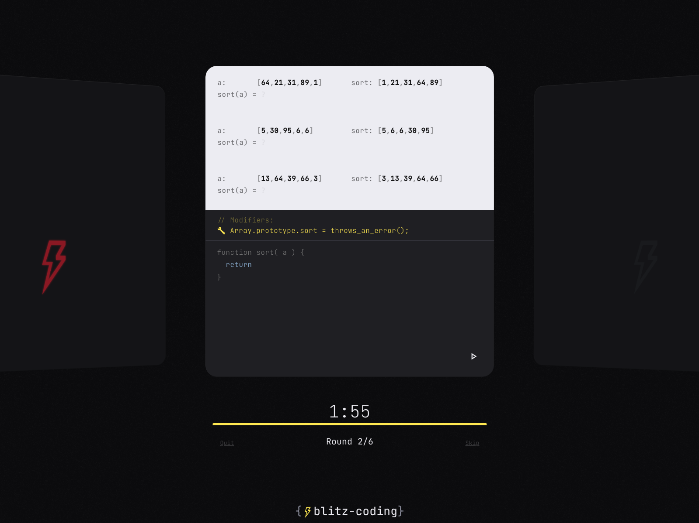
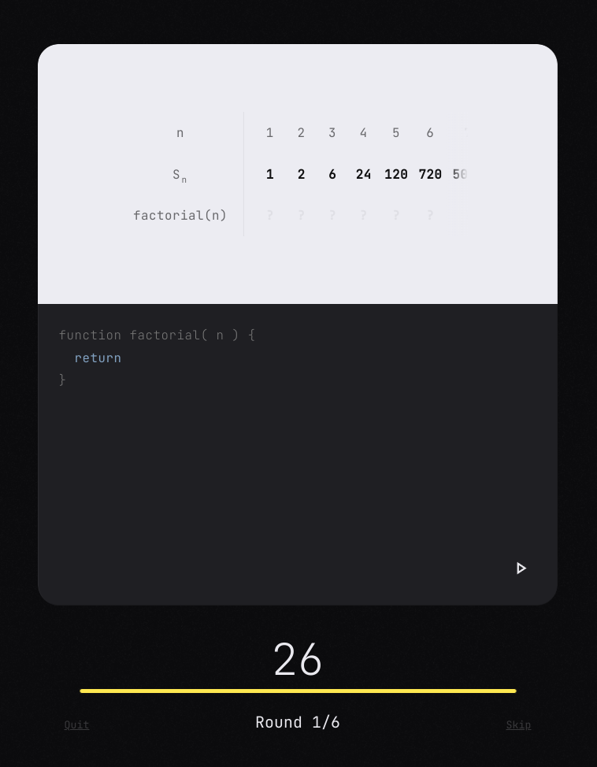
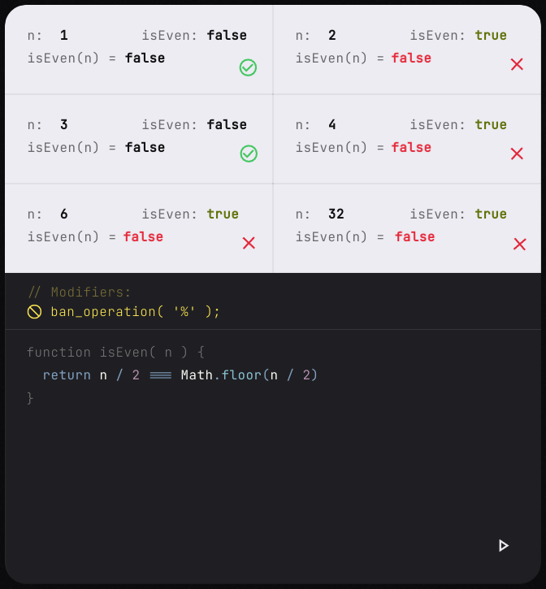
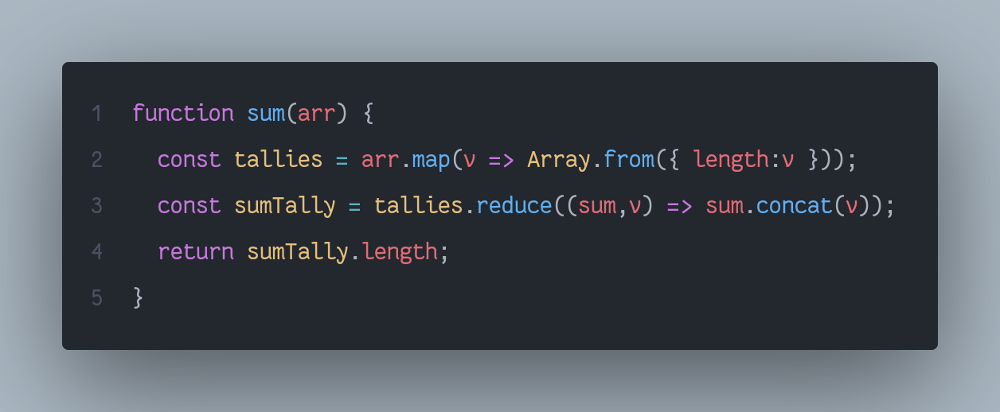
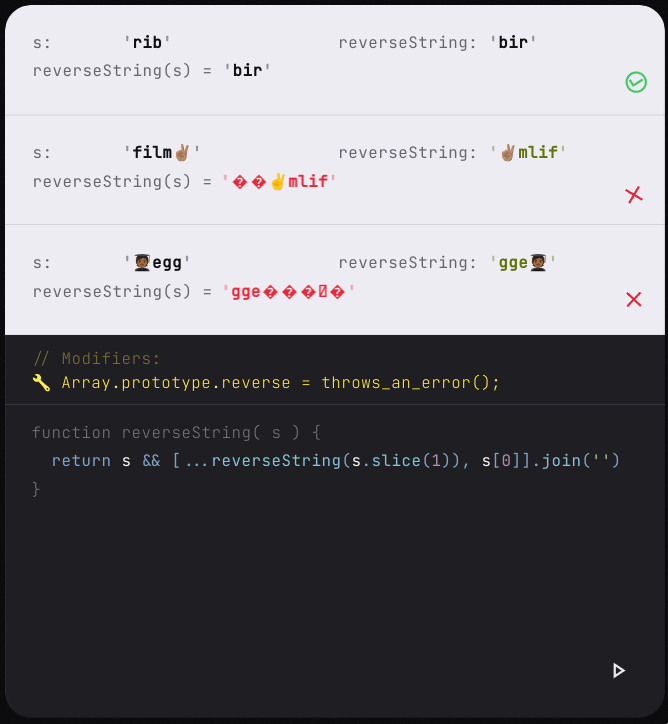

BlitzCoding

Fast-paced JavaScript coding game
BlitzCoding is a fast-paced programming game for JavaScript that you can play on the web. Test your JS skills!
Project detailsPlay online- released
- 2021
- role
- creator
- platform
- Web
- tech
- React, TypeScript
In the game, you face a series of function stubs to implement, having only the function name as a hint and test cases as the spec. Within seconds you must write the function correctly and pass all the test cases.

The game features a lot of small to medium programming challenges, from simple math formulas to factorials, sequences, object mappings, and array reductions.

Random Modifiers are little game changers that impose certain restrictions on the round, such as disabling certain methods, banning operations, banning certain language constructs like loops.
A modifier bannng the use of addition and subtraction
Imagine computing a sum but not being able to use the addition and subtraction operations.
For the record, here’s how I would compute a sum without using addition: I’ve come up with a tallying system, but it only works with positive numbers!
Summation of positive numbers without using addition
I think a big part of the fun in this game was playing around the modifiers, coming up weird ways to solve a problem.
There are four levels of difficulty, with the hardest one involving lots of modifiers, and sometimes, emoji strings 🆘. I mean, I wouldn’t be able reverse a string with emojis myself, but it was funny to put those in anyway.

It was an interesting project involving JavaScript parsing, JS "VM"s / sandboxes, meta unit testing, and silly JavaScript quirks.
Try it out! (or just watch some gameplay clips)
More gameplay clips